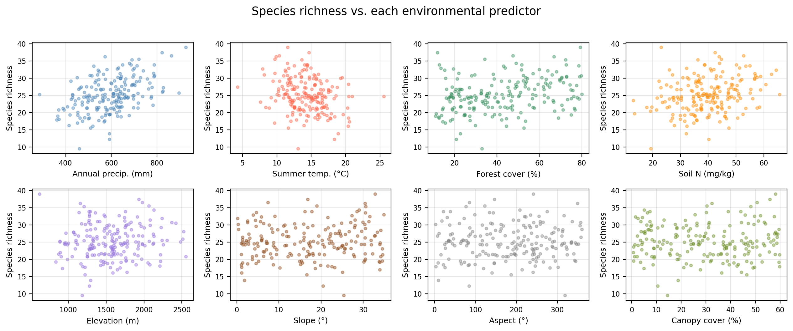
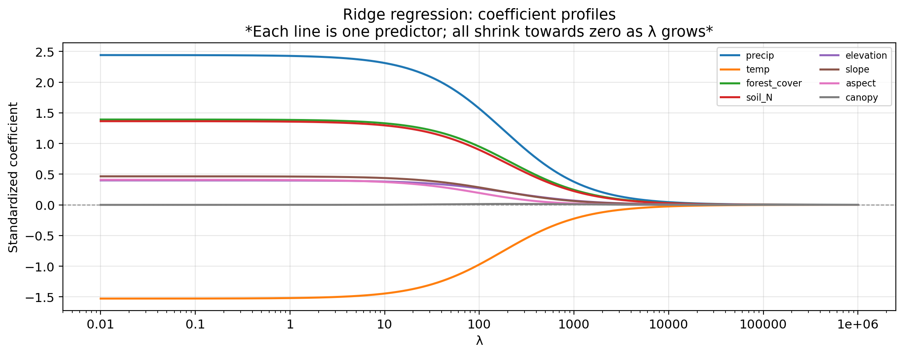
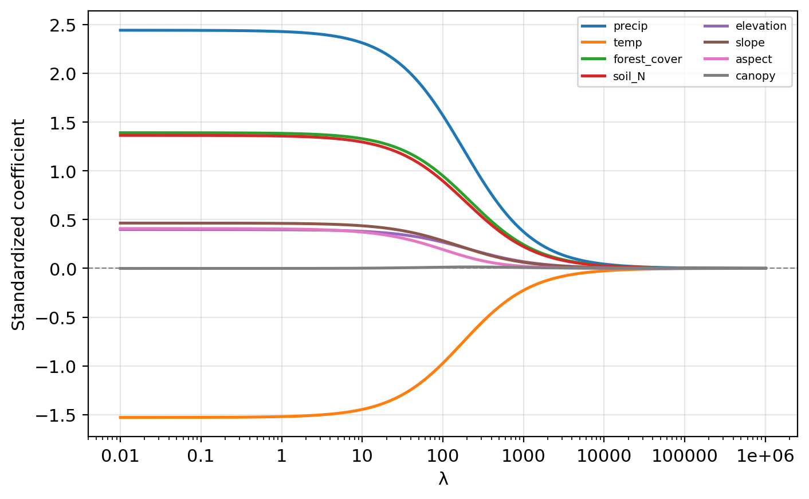
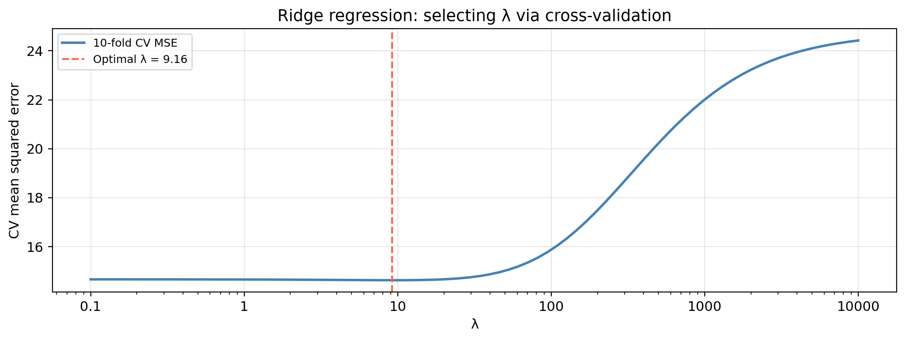
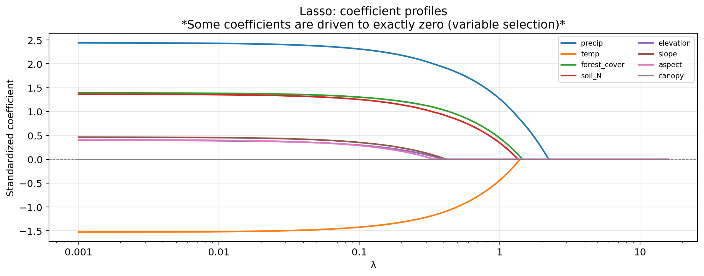
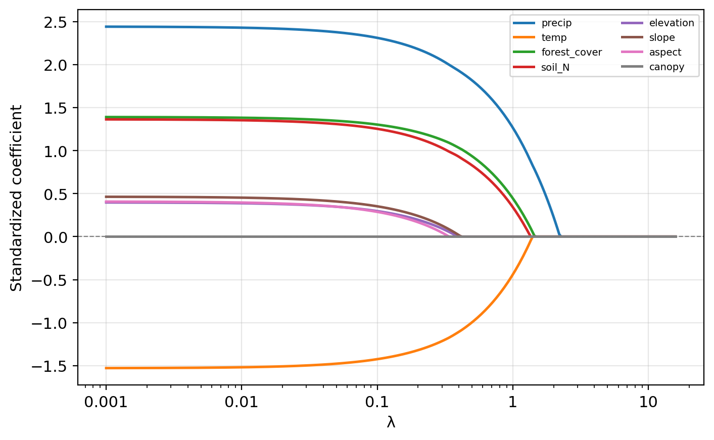
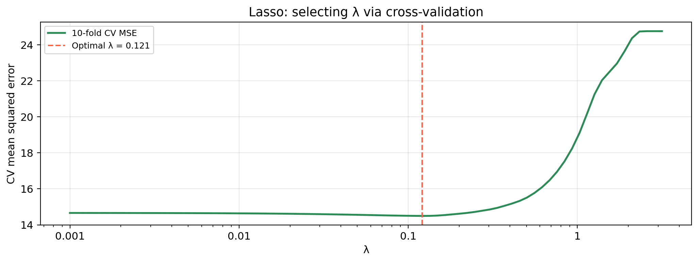

We want a simple, efficient model good at predicting species richness, with the feweset possible variables.

EDS 232
Lesson 8
Linear model selection and regularization
In this lesson
A guiding example
Our example dataset
200 mountain meadow survey plots. Response: plant species richness (species per 25 m² plot).
precip — mean annual precipitation (mm)temp — mean summer temperature (°C)forest_cover — surrounding forest cover (%)soil_N — soil nitrogen content (mg/kg)elevation — elevation (m)slope — terrain slope (°)aspect — terrain aspect (°, 0–360): no consistent linear effect on richnesscanopy — canopy cover (%): not directly tied to richnessWe want a simple, efficient model good at predicting species richness, with the feweset possible variables.
Data overview

Synthetic data generated for educational purposes only
Variable selection
The MLR set up
In the MLR model we assume: \(Y = \beta_0 + \beta_1 X_1 + \beta_2 X_2 + \cdots + \beta_p X_p + \epsilon.\)
Our goal is to estimate the coefficients and obtain a model
\[\hat{Y} = \hat{\beta}_0 + \hat{\beta}_1 X_1 + \hat{\beta}_2 X_2 + \cdots + \hat{\beta}_p X_p.\]
Our training set is \(\{(x_1, y_1), \ldots, (x_n, y_n)\}\) with \(n\) observations.
For each of the observations \((x_i, y_i)\) we have that:
We estimate the coefficients/fit the model by finding the \(\hat{\beta}_i\) that minimize the residual sum of squares:
\[ RSS = \sum_{i=1}^{n} (y_i - \hat{y}_i)^2. \]
Variable selection
After fitting a multiple linear regression we check:
If some predictors are important, the key question is: which predictors should we include?
With \(p\) predictors there are \(2^p\) possible ways of choosing which predictors to use:
Shrinkage methods
What is regularization?
Variable selection searches over subsets: keeping some predictors, discarding others.
Shrinkage methods: keep all \(p\) predictors but alter the fitting method itself so that it naturally shrinks less important coefficients towards zero.
Check-in
In the linear model
\[Y = \hat{\beta}_0 + \hat{\beta}_1 X_1 + \cdots + \hat{\beta}_p X_p,\]
how would you “remove” a predictor \(X_i\) by changing its coefficient estimate?
Set \(\hat{\beta}_i = 0\). Then the contribution \(\hat{\beta}_i X_i = 0 \cdot X_i = 0\). So \(X_i\) has no effect on predictions, equivalent to removing it from the model.
The penalized objective
Instead of minimizing RSS alone, regularization minimizes:
\[\text{minimize} \quad ( RSS + \text{penalty})\]
The penalty term:
Two methods differ in how they define the penalty:
Ridge regression
Ridge regression
Ridge regression finds the estimates of the coefficients \(\hat{\beta}_i\) by minimizing:
\[RSS + \underbrace{\lambda \sum_{j=1}^{p} \beta_j^2}_{\text{ penalty}}\]
where \(\lambda \geq 0\) is a tuning parameter chosen separately.
The shrinkage penalty \(\lambda \sum_j \beta_j^2\) pulls all \(\hat\beta_j\) towards zero. \(\lambda\) controls the tradeoff:
Ridge coefficient profiles

Check-in

Which predictors appear most important (largest absolute coefficient at low \(\lambda\))?
You have fit ridge at a grid of \(\lambda\) values and obtained a different set of coefficient estimates for each. What method would you use to select a good \(\lambda\)?
Check-in

precip, temp, forest_cover, and soil_N have the largest magnitudes at low \(\lambda\). aspect and canopy stay near zero across the entire range, likely irrelevant.
Use \(k\)-fold cross-validation!
Selecting the tuning parameter

Small \(\lambda\): close to OLS, may overfit. Large \(\lambda\): too constrained, underfits. The optimal \(\lambda\) balances these extremes.
The lasso
The lasso
The lasso regression finds the estimates of the coefficients \(\hat{\beta}_i\) by minimizing::
\[RSS + \underbrace{\lambda \sum_{j=1}^{p} |\beta_j|}_{\text{ penalty}}.\]
The only difference from ridge: the penalty uses absolute values rather than squares.
The lasso penalty forces some coefficient estimates to be exactly zero when \(\lambda\) is sufficiently large.
Lasso simultaneously performs shrinkage and variable selection: because it produces models that use only a subset of predictors.
Check-in
The lasso regression finds the estimates of the coefficients \(\hat{\beta}_i\) by minimizing::
\[RSS + \underbrace{\lambda \sum_{j=1}^{p} |\beta_j|}_{\text{ penalty}}.\]
If \(\lambda = 0\), how are the lasso coefficient estimates related to the least squares estimates?
What happens to all lasso coefficients when \(\lambda\) is very large?
When \(\lambda = 0\) there is no penalty, so minimizing \(RSS + 0 \cdot \sum |\beta_j|\) is the same as minimizing RSS alone. The lasso estimates equal the OLS estimates.
As \(\lambda \to \infty\) the penalty dominates and forces all coefficients to exactly zero. The model reduces to the null model (intercept only), predicting the mean response for every observation.
Lasso coefficient profiles

Check-in

Based on the lasso coefficient profile plot, which predictors are driven to exactly zero first as \(\lambda\) increases?
Check-in

Based on the lasso coefficient profile plot, which predictors are driven to exactly zero first as \(\lambda\) increases?
aspect and canopy are driven to exactly zero at the smallest \(\lambda\) values, followed by elevation and slope. Their coefficient lines flatten to zero and stay there.
Selecting the tuning parameter

The lasso tuning parameter is selected by the same 10-fold CV procedure as ridge: fit at many \(\lambda\) values, compute CV-MSE at each, select the minimum.
Comparing lasso and ridge
When to use each
Neither method consistently outperforms the other:
The number of truly relevant predictors is never known in advance for real data.
Cross-validation can be used to compare both approaches and select the one with lower CV-MSE.
Check-in
Predictor True β OLS Ridge (CV λ) Lasso (CV λ)
precip 2.50 2.442 2.323 2.283
temp -1.80 -1.529 -1.453 -1.402
forest_cover 1.50 1.391 1.335 1.284
soil_N 1.00 1.364 1.301 1.230
elevation 0.50 0.398 0.381 0.276
slope 0.15 0.464 0.439 0.329
aspect 0.00 0.408 0.375 0.263
canopy 0.00 -0.001 0.002 0.000How do ridge and lasso estimates compare to the true \(\beta\) for precip, temp, forest_cover, and soil_N?
What has lasso done to aspect and canopy? What has ridge done?
Check-in
Predictor True β OLS Ridge (CV λ) Lasso (CV λ)
precip 2.50 2.442 2.323 2.283
temp -1.80 -1.529 -1.453 -1.402
forest_cover 1.50 1.391 1.335 1.284
soil_N 1.00 1.364 1.301 1.230
elevation 0.50 0.398 0.381 0.276
slope 0.15 0.464 0.439 0.329
aspect 0.00 0.408 0.375 0.263
canopy 0.00 -0.001 0.002 0.000Both methods shrink estimates towards zero relative to OLS, but they recover the correct ranking and signs for the four important predictors.
Lasso sets canopy to exactly zero: correctly identifies it as irrelevant. Ridge retains both with small but non-zero coefficients.